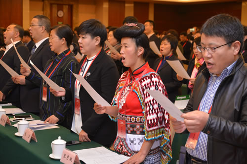
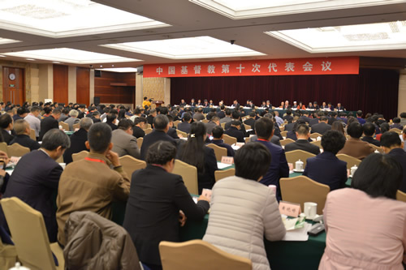
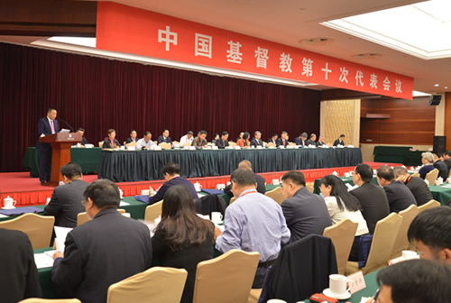

-
 手机版
手机版

-
 APP下载
APP下载
-
 微信
微信

手机版
APP下载
微信
 收藏
收藏

11月的首都，含苞腊梅静待绽放。在充满宁静和喜悦的氛围中，中国基督教第十次代表会议于28日上午在京隆重开幕。来自全国30个省、自治区、直辖市的300多名代表参加会议。

上午8时，在《我爱中国教会歌》的赞美歌声中，吴伟庆牧师主持了开幕礼拜。徐玉兰牧师引用《路加福音》17章7节至10节的经文，以“仆人的本分”为题证道，勉励同工同道安分守己、殷勤做工、忠心服侍、谦卑顺服。
上午9时，在庄严的国歌声中，中国基督教第十次代表会议正式开幕。徐晓鸿牧师主持开幕式并致辞。中央统战部副部长、国家宗教事务局局长王作安应邀出席会议。中国佛教协会副会长演觉法师、中国道教协会副会长孟至岭道长、中国伊斯兰教协会副会长金汝彬、中国天主教爱国会副主席沈斌主教到会祝贺。沈斌主教代表中国佛教协会、中国道教协会、中国伊斯兰教协会、中国天主教爱国会、中国天主教主教团向大会致贺辞。
中央统战部副部长、国家宗教事务局局长王作安在开幕式上讲话。王作安代表中央统战部对代表会议的召开表示热烈的祝贺，对基督教全国两会过去五年的工作给予充分肯定，缅怀傅先伟长老等老一辈基督教界人士。王作安表示，基督教率先提出实现宗教中国化愿景，成为宗教中国化的先行者，希望新一届委员认真学习贯彻十九大精神和习近平总书记关于宗教问题和宗教工作的系列重要论述，继续坚持推进基督教中国化。王作安希望中国基督教始终高举爱国爱教旗帜，深入推进神学思想建设，依法依规开展宗教活动，切实加强基督教团体建设，努力培养合格的教会人才。
高峰牧师代表中国基督教三自爱国运动委员会第九届和中国基督教协会第七届常务委员会作题为“坚持中国化方向，办好新时代的中国教会”的工作报告。报告指出，五年来，在神的引领下，在党和政府的关怀领导下，在广大同工同道的共同努力下，中国基督教坚持按三自原则办好教会，在至圣的真道上扎根建造，各项圣工稳步推进。据不完全统计，目前全国基督徒约3800万人，教会堂点约6万座，圣职人员1.4万余人，专职传道员约2.2万人，神学院校22所。五年来，基督教全国两会投入资金逾2770万元开展社会服务项目约200个，直接受益人群近26万人次；发行圣经近1800万册，出版及再版各类书籍100多种，超过550万册；举办4次西南少数民族教会双语传道人集中学习班，培训来自滇黔桂的14个少数民族教牧同工近500人次；接待来自33个国家和地区的访问团383批、2564人次，组织出访107批、400人次，出访37个国家和地区；各神学院校毕业神学生约6300人，资助贫困神学毕业生348人，总计208万元，公派留学生85人，短期进修25人。

报告回顾了过去五年的工作，指出对于在新时代建立主的身体、办好教会有四点体会，依序为：坚持中国化方向，是中国教会与社会主义社会相适应的必由之路；推进依法依规办教，是中国教会健康和谐发展的根本保障；加大人才培养力度，是中国教会做好各项事工的关键所在；加强自身建设，是完善基督教两会管理体制的当务之急。报告详列未来五年要着力做好的四方面重点工作，依序为：进一步加强学习，不断提高与社会主义社会相适应的广度和深度；进一步增强法治意识，依法依规办好教会；进一步坚持基督教中国化方向，落实《推进我国基督教中国化五年工作规划纲要（2018-2022）》安排部署；进一步加强自身建设，全面推进各项圣工。

单渭祥牧师作基督教全国两会章程修改的说明。
中国基督教代表会议由各省、自治区、直辖市基督教三自爱国运动委员会和基督教协会（或教务委员会）等代表产生单位共同推选代表组成，每五年举行一次。本次会议将审议相关文件，并选举产生新一届基督教全国两会领导班子。会议将于30日结束。